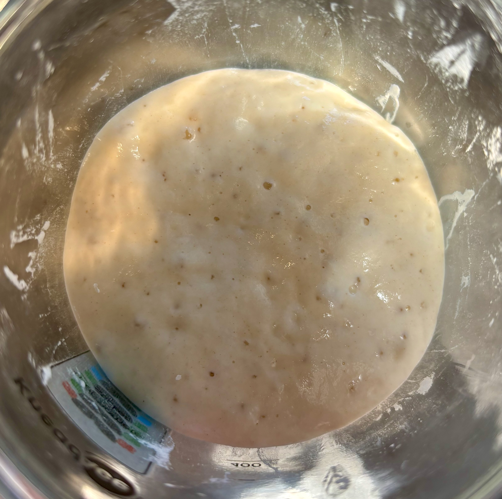

Fermentation: Sourdough
Learn about the science of fermentation by baking your own sourdough bread from scratch!
What is Fermentation?
Fermentation is a metabolic process in which microorganisms like yeast and bacteria break down sugars into simpler compounds(alcohols, gases, and acids) in the absence of oxygen (anaerobic conditions). In sourdough, this natural fermentation gives bread its rise, texture, and flavor.
There are two main types of fermentation involved in sourdough:
1. Alcohol Fermentation (Yeast):
Yeast (mostly Saccharomyces cerevisiae and wild strains) metabolize simple sugars and convert them into:
- Carbon dioxide (CO₂), which makes the dough rise by creating bubbles in the dough
- Ethanol (alcohol), which evaporates during baking
2. Lactic Acid Fermentation (Bacteria): Lactic acid bacteria (like Lactobacillus) also metabloize sugars and produce:
- Lactic acid, which gives sourdough its signature sour flavor
- Acetic acid, which adds sharpness and complexity
Commercial Yeast vs. Sourdough Starter
Sourdough fermentation differs from commercial yeast fermentation in several ways:
- It uses wild yeast and natural bacteria from flour and the environment
- Fermentation takes longer (often 12–48 hours)
- Results in more digestible bread with improved shelf life and flavor complexity
Sourdough Bread
Sourdough bread is a living product of microbial fermentation. It starts with a starter culture — a mixture of flour and water allowed to ferment over time until it's bubbling and active.
A sourdough starter contains:
- Wild yeast (natural leavening agent)
- Lactic acid bacteria (flavor and structure)
- Enzymes (break down starches and proteins)
Try It Yourself!
Make your own starter using just flour and water:
- Day 1: Mix equal parts of all purpose flour and water. A small amount is recommended(20g). Let sit lightly covered for 24 hrs.
- Day 2–7: Each day, discard until 50g remain, and feed with with equal parts fresh flour and water. You should begin to see the starter grow and form small bubbles.
- By Day 7, your starter should at least double in size around 4-12 hours after feeding and have a slightly tangy aroma.
- Continue to feed every 24 hours if left in room-temperature. Feed every week if left in fridge.
Tips
- Hungry starter is generally smoother and more liquidy, and can sometimes form a layer of excess alcohol. Just refeed the starter to re-activate it.
- Active starter should be light and bubbly, and is generally thicker. 
- A starter is at its peak when it has doubled or tripled in size.
How to make Sourdough Bread
- Feed your starter: Combine equal parts flour and water into your sourdough starter and let it sit until bubbly and active (usually 4–8 hours).
- Mix the dough: Combine active starter with flour, water, and salt. Mix until a rough dough forms.
- Bulk fermentation: Let the dough sit at room temperature for 4–6 hours, stretching and folding every 30 minutes to build gluten strength.
- Shape and proof: Shape the dough and place it in a floured proofing basket. Let it ferment for another few hours or overnight in the fridge.
- Bake: Score the dough, then bake it in a preheated Dutch oven at 450°F (230°C) for about 30–45 minutes until crusty and golden.
Observe the Chemistry
As your dough ferments and bakes, you’ll see the fermentation chemistry in action:
- CO₂ from yeast forms air pockets in the dough, giving sourdough its open crumb.
- Organic acids lower the pH, influencing texture, crust color, and shelf life.
- The crust undergoes Maillard reactions (thanks to low pH and sugars) and caramelization, giving sourdough its dark, blistered look and rich aroma.
Experiments
- Compare loaves made with long fermentation vs. short: Longer times tend to have deeper flavor and softer texture.
- Change your flour types: Rye flour often increases microbial activity due to higher nutrient content.
- Test ambient temperature: Fermentation speeds up in warmth and slows in cold.
- Play with different levels of hydration: High hydration doughs generally ferment faster than lower hydration doughs.